-

Guía 2: Bluetooth Low Energy - Simblee
Todo este proyecto se realizó en base a la asesoría en clase de Sensores y Actuadores I en la carrera de Ingeniería en Diseño de Entreteimiento Digital.
Puedes descargar la carpeta con los códigos finales de esta parte del proyecto. dando click aquí.
A continuación encontraras un tutorial para trabajar con BLE y Simblee.
TUTORIAL.
MARCO TEORICO PARA REALIZAR EL TRABAJO.
En el siguiente documento puedes ingresar para saber más sobre BLE. el porque se diseño, las diferentes plataformas queclass="parrafo_informacion" lo soportan, sus funciones e información muy importante sobre BLE; conocido tambien como bluetooth smar. ingresa al documento aquí
Lo primero que podremos encontrar en el documento anterior es el ¿Por qué BLE?
Respondiendo a esta pregunta, lo que hace que BLE sea tan interesante es que es una de las formas más fáciles de poder comunicarse con cualquier plataforma móvil moderna que hay (iOS, Android, teléfonos con Windows, etc.). Lo segundo por tener en cuenta es que BLE nos permite tener un dispositivo bluetooth con muy bajo consumo de energía, a un muy bajo costo y con unas diferencias muy minimas con relación al bluetooth estandar.
En la siguiente imagen podras ver algunas diferencias entre el BLE y el Buetooth clasico.
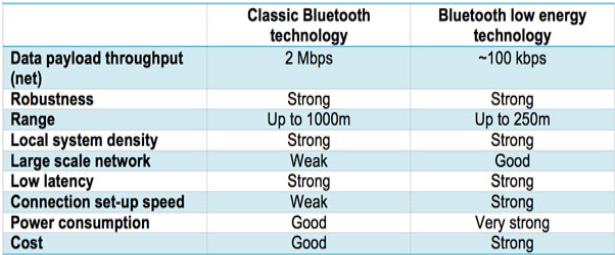Entre las diferencias se puede observar en la emulación de puerto serie. La tecnología Bluetooth clásica proporciona el perfil de puerto serie (SPP) para la emulación de conexiones de datos en serie. La tecnología de baja energía de Bluetooth no proporciona tal soporte en la especificación estándar v4.0; aunque proveedores como connectBlue pueden proporcionar un buen nivel de soporte. Las velocidades de transferencia de datos con la tecnología Bluetooth clásica que utiliza la velocidad de datos mejorada, pueden superar los 2 Mb / s, pero las de la tecnología de BLE son inferiores a 100 kb / s. Dado esto, la transmisión de BLE consume menos energía pero olvidando un poco la velocidad de transmisión. ingresa acá para saber más
Vamos a utilizar un Simblee como BLE para realizar nuestras pruebas.
Acontinuación puedes encontrar la vista superior del Simblee y la descripción de sus pines de conexión.
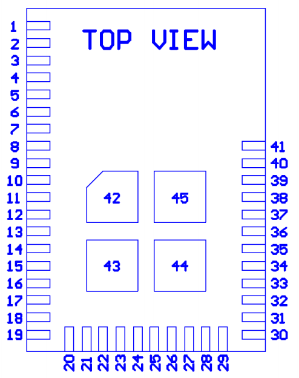 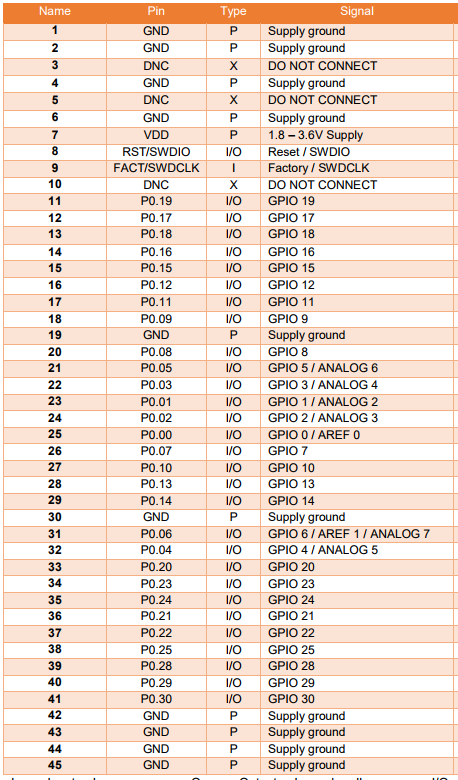Para más información acerca del Simblee puedes ingresar a su hoja de datos dando click aquí
INSTALACIÓN DEL ARDUINO IDE.
Puedes ir a arduino.cc y darle click en descargas. Pero ingresa directamente al enlace para que dirigirte a la página de descarga oficial del IDE Arduino. click para ir a descargar
Dirigete a la carpeta en la que descargaste el instalador y abrelo.
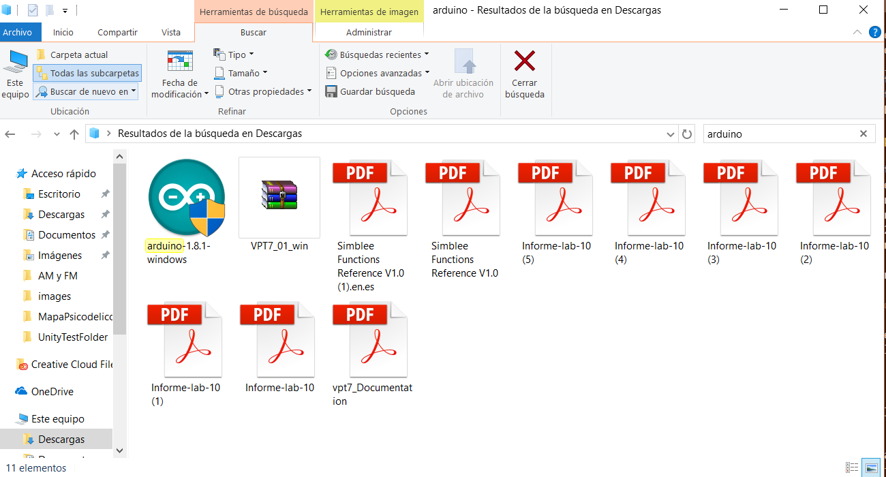Sigue todos los pasos de instalación como cualquier otro progrma normal
Si no sabes instalar arduino te invito a que veas el siguiente tutorial
INSTALACIÓN DE LA LIBRERIA SIMBLEE.
Ahora vamos a instalar la librería de Simblee en nuestro IDE Arduino.
Para esto ingresa al siguiente link para seguir los pasos de instalacion de la librería simblee (Nota: si no has instalado el IDE Arduino del paso anterior esta guía tambien trae los pasos.) Ingresa al documento aquí
Observa y lee la guía de usuarios de Simblee para hechar un vistazo a unos ejemplos y un poco más de información sobre el dispositivo. Ingresa acá para ir a la guía de usuario.
PRIMEROS PASOS EN SIMBLEE.
Primero usaremos una herramienta de prueba publicada por la empresa Nordic que nos permite realizar pruebas de funcionamiento con nuestro dispositivo Simblee.
Para descargar la app para ANDROID Ingresa aquí
Para descargar la app para iOS Ingresa aquí
Ahora si a probar nuestro Simblee. Lo que primero debemos hacer es en nuestro IDE Arduino ingresar a Archivos - Ejemplos - Simblee - ProximityAveraged. Si no encuentras el ejemplo te dejo unas imagenes para que lo hagas.
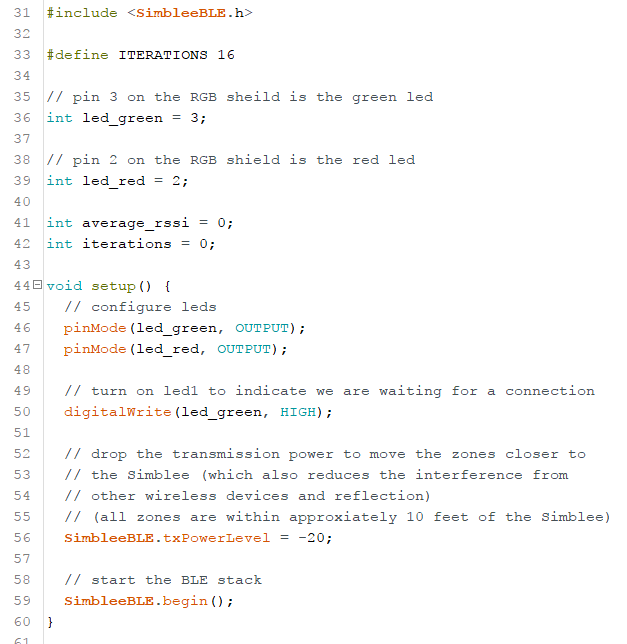 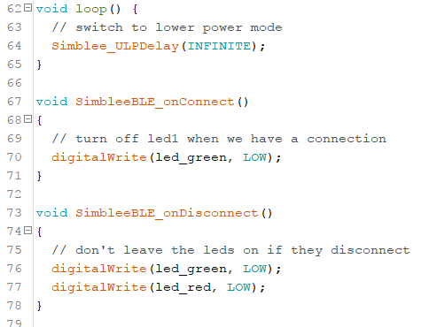 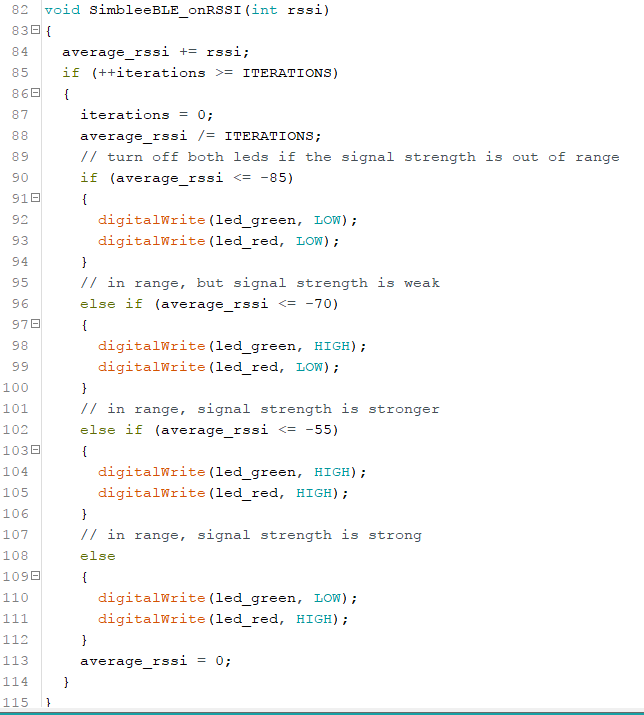Luego de tener nuestro código estamos listo para cargarlo a nuestro dispósitivo Simblee, para este proyecto utilizamos un RFD77203, un USB Shield RFD22121 y un RGB Shield RFD 22122.
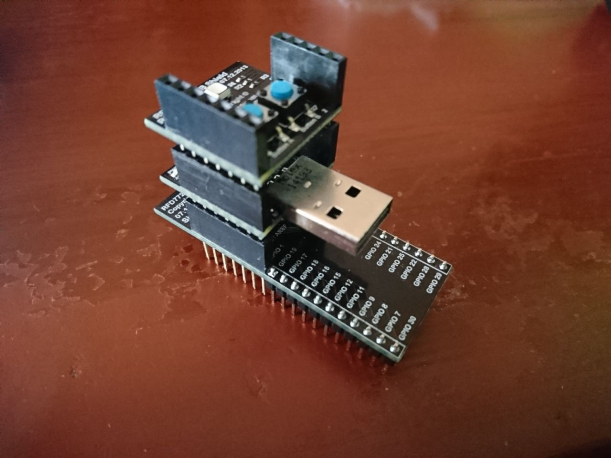Conectemos nuestro Simblee al computador y en el IDE Arduino vamos a Herramientas - Placa y seleccionamos el Simblee que debe aparecernos en la parte inferior de la ventana emergente, si esto no te aparece, es porque no has instalado correctamente las librerías de Simblee, así que te invito a que regreses a la parte de instalacion de librería antes de continuar.
Luego de haber seleccionado la placa debemos ingresar a Herramientas - Puerto y seleccionar el puerto COM en el que tenemos conectado nuestro Simblee. Si no sabes cual puerto es, puedes ingresar al administrador de dispositivos de tu computadora y visualizar los dispositivos. En mi caso es el COM8 como muestra la imagen.
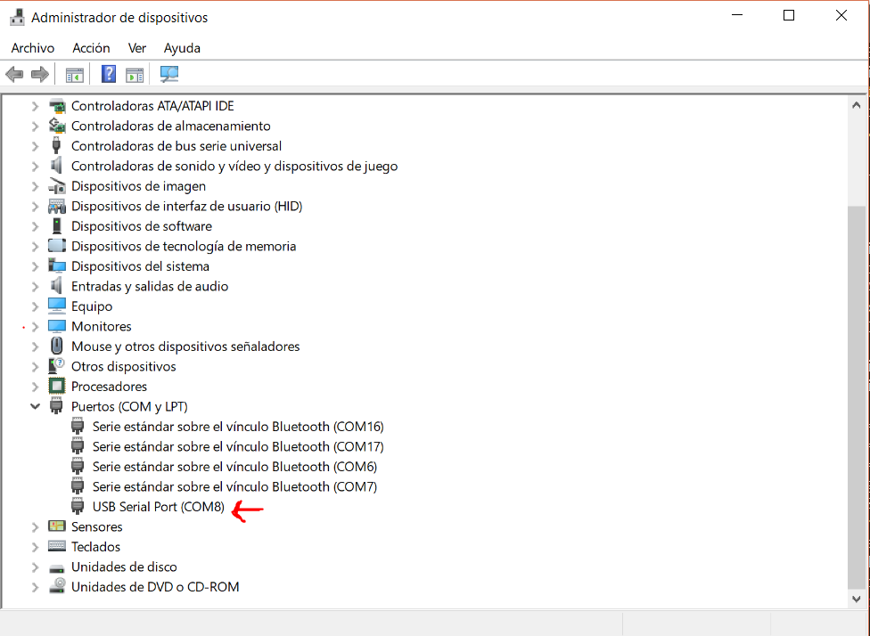Ya con nuestro Simblee conectado y seleccionado en el Puerto y la Placa vamos a subir nuestro programa dando click en el botón subir de nuestro IDE Arduino.
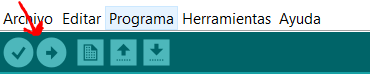Para darnos cuenta de que nuestro sketch (código) a subido a nuestro Simblee nos fijamos en la parte inferior izquierda del programa y debemos de tener un aviso que dice "Subido" así como en la imagen.
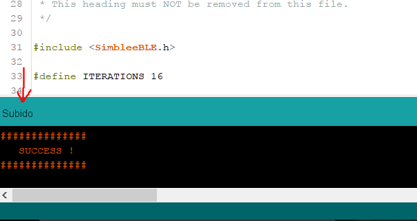Observamos nuestro Simblee y nos daremos cuenta de que el Led verde está encedido.
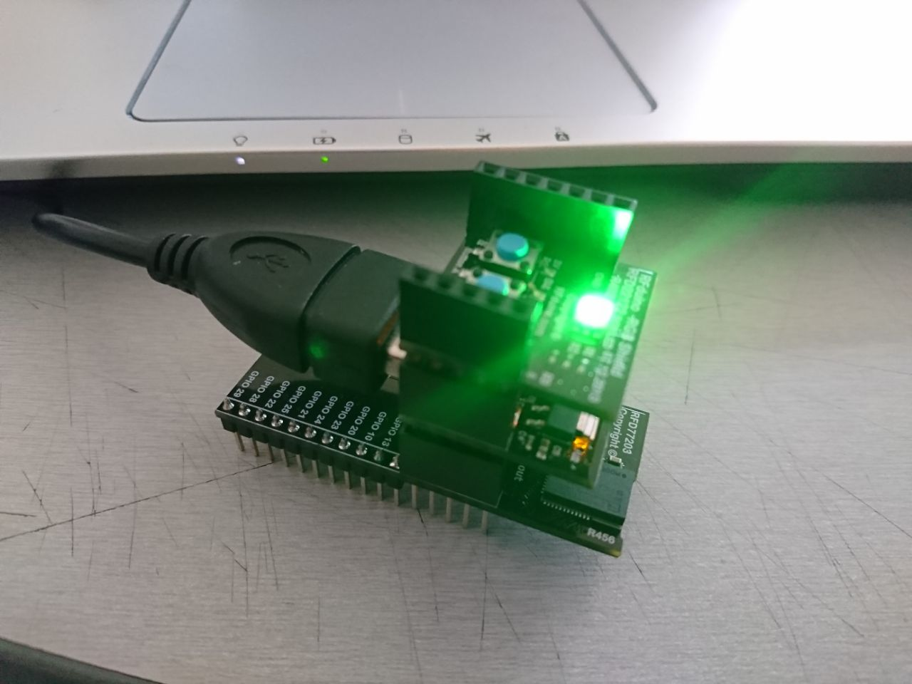Antes de ingresar a la aplicación verificamos que nuestro bluetooth esté encendido. Una vez con el bluetooth de nuestro celular esté encendido ingresamos a la aplicación y en la parte superiro derecha encontramos un botón para escanear y lo oprimimos.
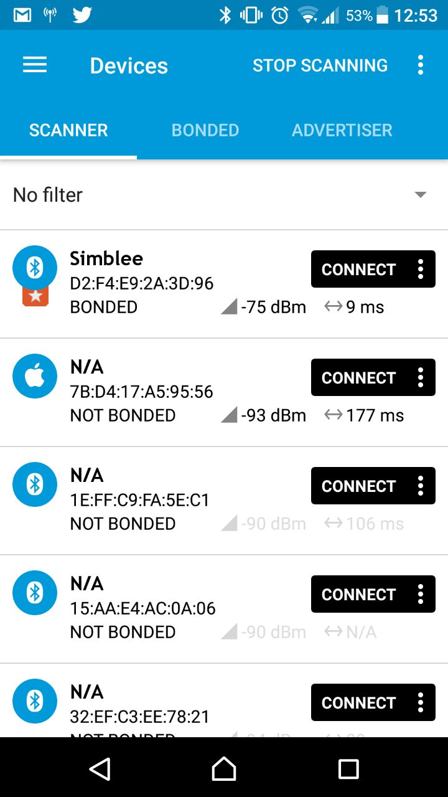Como podemos ver en la imagen hay un monton de dispositivos bluetooth que capta nuestra aplicación, pero solo vamos a conectarnos al que menor numeros de dBm tenga, ya que mientras más cerca pongamos nuestro celular al dispositivo Simblee más cercano a 0 será el valor.
Al conectarnos al dispositivo Simblee esté cambiará automaticamente de color.
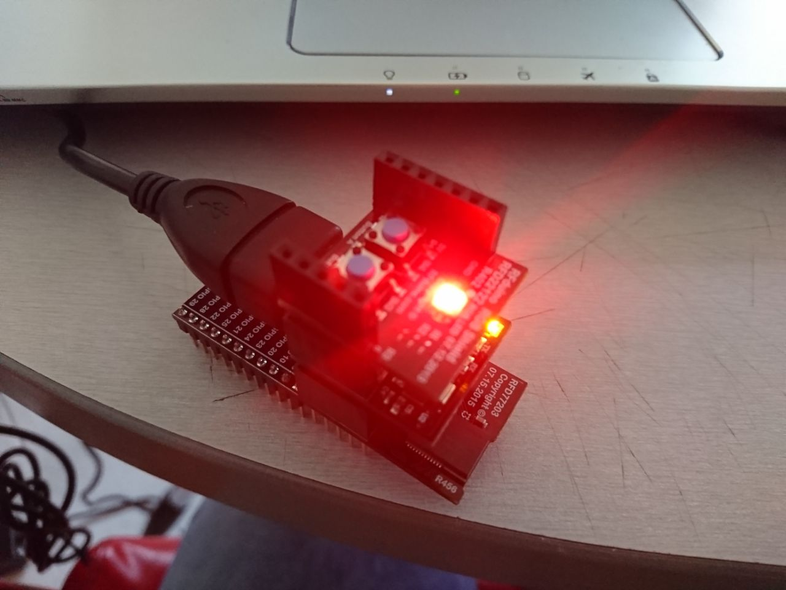Y ahora podemos probar el codigo que subimos a nuestro Simblee, cuando tenemos nuestro dispositivo Simble muy cerca a nuestro telefono movil, podremos observar que el Led se encuentra en rojo, pero si nos vamos alejando el color del Led va a variar, luego se pone amarillo y más lejos se pone verde.
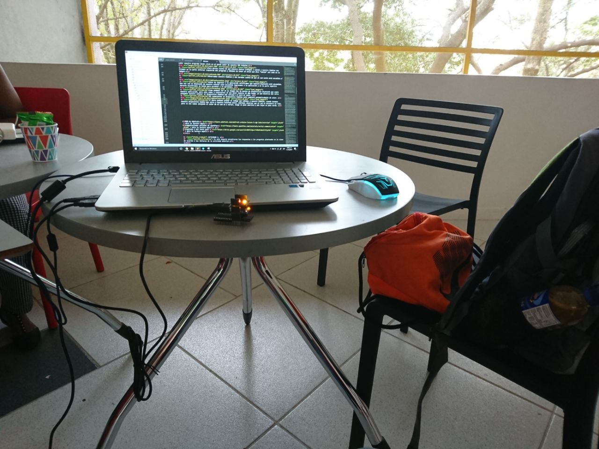Ya el primer ejemplo con Simblee lo has terminado ¡FELICITACIONES!
SEGUNDO EJERCICIO CON SIMBLEE.
En este ejercicio vamos a aprender a comprobar los estados de los botones de nuestro RGB Shield RFD22122. Utilizaremos la misma aplicación movil que descargamos en el ejercicio anterior. Dentro del IDE Arduino vamos a Ejemplos - SimbleeBLE - LedButton. Conectamos nuestro Simblee y le cargamos el sketch (Nota: Recuerda seleccionar el puerto y el COM como lo hiciste en el ejercicio anterior) y conectamos nuestro Simblee a en la aplicación descargada.
Una vez conectemos nuestra aplicación al dispositivo Simble le daremos clic en la opción "Unknown Service"
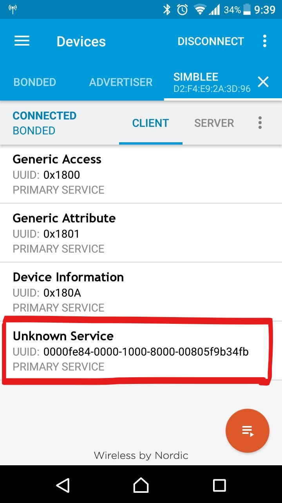Despues de esto veremos una pantalla en la que se nos muestran todos los servicios que estan disponibles en este momento. En la parte que dice "Unknown Characteristic" vamos a oprimir dos veces el botón con las tres flechas hacia abajo tachadas, con el primer click se destachan y con el siguiente se vuelven a tachar, esto para que pueda recibir y captar la señal del botón pulsado.
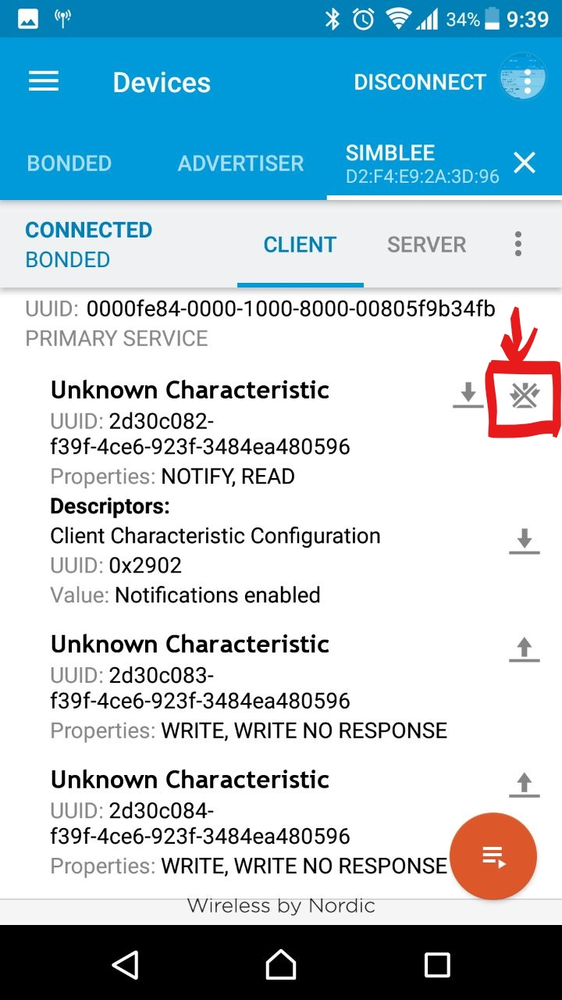Si pulsamos nuestro botón podemos observar como en nuestra aplicación hay un (0x)01 en el value y cada vez que lo soltamos un (0x)00.
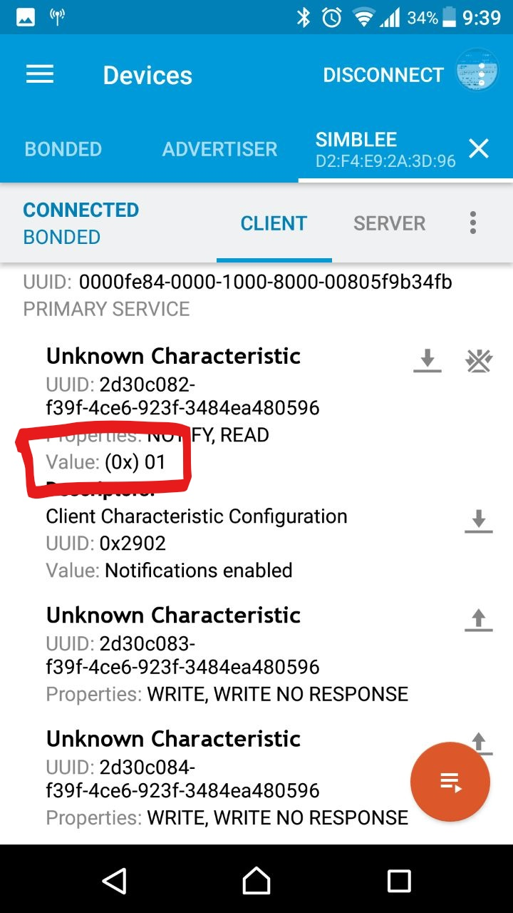Te debes estar preguntando ¿Cómo funciona esto? es simple la verdad. Entra en el siguiente enlace para que te des cuenta de las funciones que tiene y que es lo que hacen. click aquí para ir al documento.
Tambien podemos enviar datos desde la aplicación movil al Simblee si observamos bien hay otro servicio co nel nombre de Unknown Characteristic pero que en una parte que tiene dice: properties: WRITE, WRITE NO RESPONSE. En esta parte dando click en la fleha podremos enviarle un valor a nuestro Simblee.
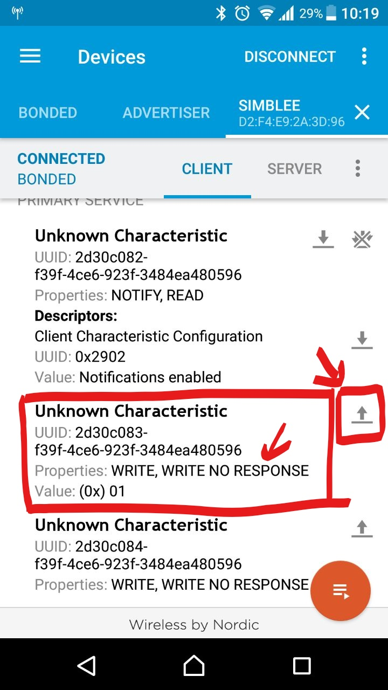Si le enviamos un 01 a nuestro Simblee esto encenderá el Led y si por lo contrario usamos un 00 esto cambiará el estado del Led y lo apagará.
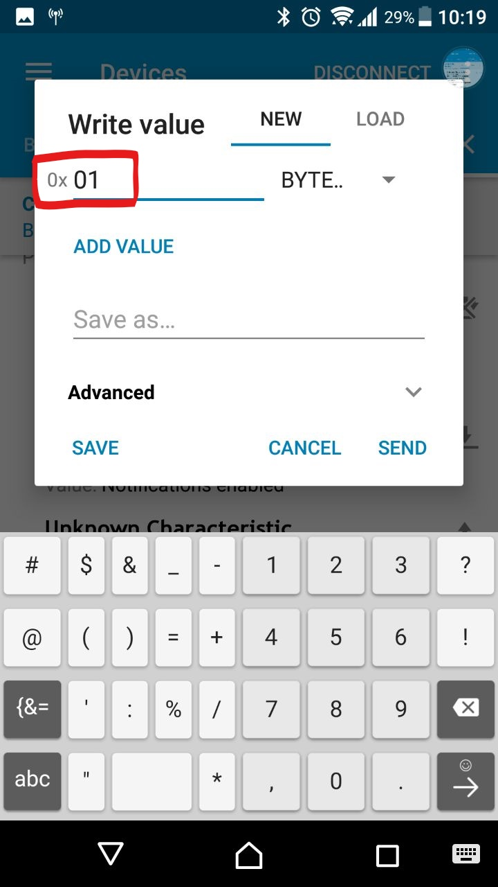AHORA QUE YA CONOCEMOS LO BASICO VAMOS A CREAR NUESTRA PROPIA APP.
Primero vamos a realizar unos pequeños cambios en nuestro sketch de arduino para que pueda funcionar a la perfección con la aplicación que vamos a hacer. Compara el ejemplo con las imagenes que te voy a mostrar y lo que no tengas igual cambialo.
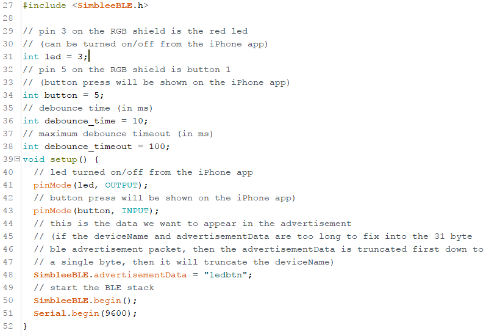 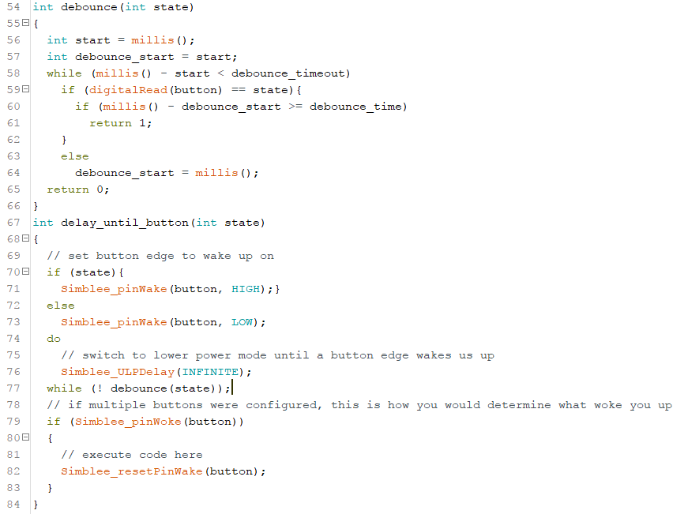 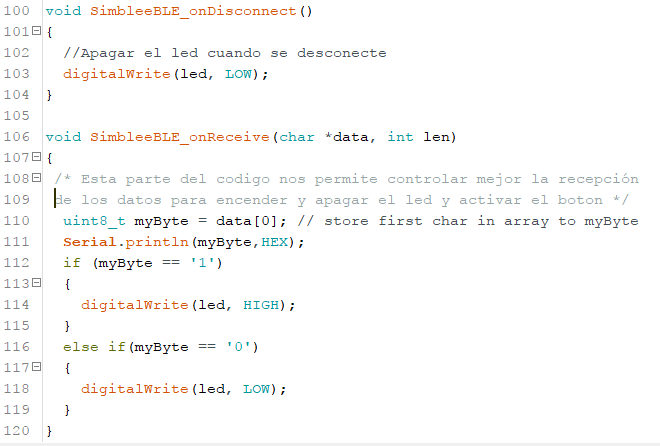
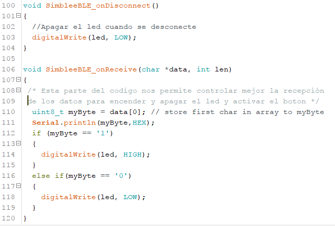
Luego de hacer las modificaciones cargamos en nuestro Simblee el sketch.
Nuestra aplicación la vamos a crear con AppInventor. Los invito a que entren al siguiente enlace y sigan el tutorial click aquí para ir al tutorial.
En este enlace podran encontrar todas las propiedades de Simblee en AppInventor Cliack aquí para ingresar.
Para poder leer el estado del botón necesitamos agregar unas pequeñas cosas en lo anterior. Acá les dejo los pantalolazos para que lo completen.
Lo quedebemos hacer es agregar un Layout para almacenar un Botón y un Label; el botón se encargará de hacer la lectura del estado del botón del Simblee y en el Layout se imprimirá el valor recibido.
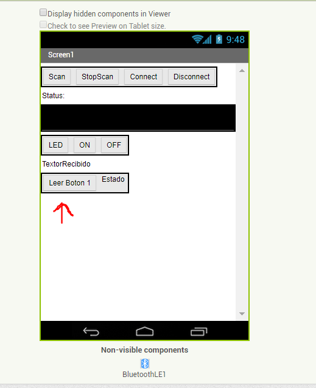Vamos a nuestro diagrama de bloques y agregamos lo nuevo. unos botonnes ON/OFF que nos permiten enviar un mensaje a los servicios y caracteristicas del Simblee (Para saber cuales son los numeros de los servicios y caracteristicas puedes conectarte al simblee con la aplicación que descargamos apra hacer las primeras pruebas). Debes tener muy en cuenta que para escribir y leer este valor en servicio o carecteristica cambia. aplica los conocimientos adquiridos en el ejercicio dos para saber cual sirve para escribir y cual para leer.
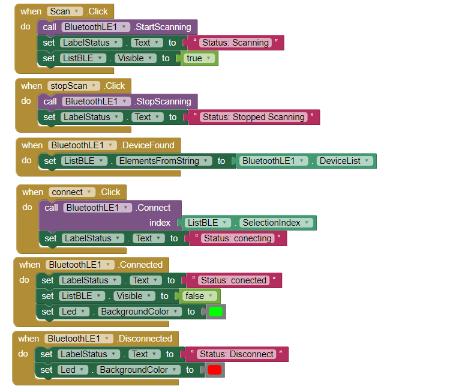 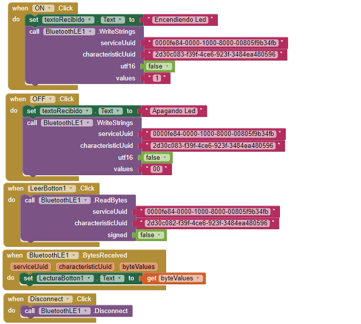Puedes descargar el Apk e instalarlo en tu celular o usando el generadordecodigos, para lo cual necesitaras descargarte a tu celular la aplicación MIT AI2 Companion que encontraras enla Google Play Store o click aquí para ir a la página de descarga. Escaneas el código y se instala la aplicación.
Abrimos la aplicación instalada y le damos al botón escanear, podreos visualizar una lista con los dispositivos a los que podremos conectarmos, seleccionamos nuestro Simblee y nos conectamos a él oprimiendo el botón conectar. Si la conexión se a realizado correctamente podremos observar como el boton "LED" cambia su color a verde. En este caso ya podemos usar los botones ON/OFF para encender y apagar nuestro Simblee con la App que hemos probado. Y ahora si undimos el botón para leer el estado del botón del Simblee mientras tenemos presionado el del Simblee podremos ver como nuestro valorcambia a 1 osea que está presionado (Nota: El estado solo se actualiza en nuestra app cuando presionamos el botón).
Ya has creado tu propia app con AppInventor para controlar un simblee ¡FELICITACIONES!
Puedes descargar el sketch de arduino que realice directamente dando click en este enlace.
Puedes descargar el programa de AppInventor que realice directamente dando click en este enlace.
¡¡¡¡¡¡¡¡EL RETOOOOOOOOOO!!!!!!!!!
Para este reto lo que debes realizar es un dispositivo wereable que puedan utilizar las personas al dormir con su pareja. Un dispositivo que funcione como alarma y se pueda programar a la hora desaeada. Debes crear la aplicación para controlar el dispositivo.
¡Muchas Suerte!
Si quieres ver nuestra aplicación descargala desde Google Play Store dando click aquí.
SOLUCION AL RETO.
Espero que hallas podido solucionar el reto. Visita nuestras redes sociales y has que todos conoscan la aplicación que hiciste.
Para esta solución utilizamos como base la desarrollada anteriormente para prender y apagar el led del simble. Lo unico que le agregamos fue un Clock que lo podremos encontrar en la parte de sensores un Notifier que lo podremos encontrar en la pate de User Interface.
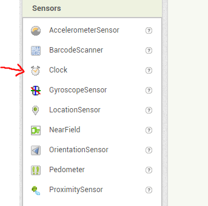 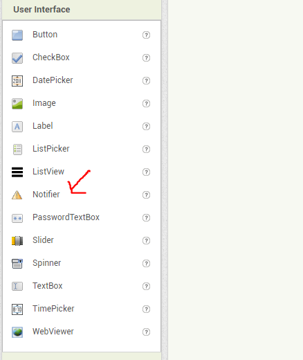En la pestaña de diseño agregamos unos Text box para agregar la hora y los minutos en la que queremos establecer la alarma, un label para separarlos con unos ":" y un boton para establecer la hora. Esto lo puedes agregar en Arragements a tu gusto. Yo le agregué otras cosita pero ya veremos para que son.
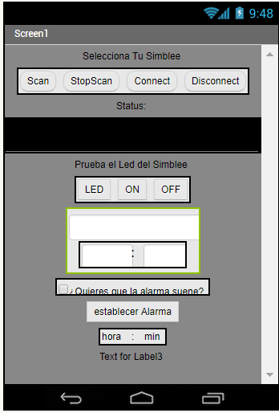En la pestaña de bloques seleccionamos la opcion cuando demos click en el boton que acabamos de crear. y en este creamos uns variables globales que tomaran los valores de la hora y los minutos; uno para la hora y otro para los minutos y llamaremos al notifier para que muestre una alerta con un pequeño mensaje "Hora configurada a" y le agregamos los valores de la hora y los minutos que el usuaio asignará.
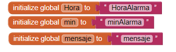 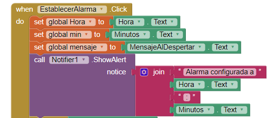Ahora con el Clock utilizamos el timer para acceder a la hora y los minutos de nuestro telefono los cuales los estoy mostrando en los label que coloqué en la parte de abajo (Esto lo hice solo para probar). Comparamos con un AND si la hora establecida por el usuario y la hora de nuestro celular son iguales y si esto es corecto enviamos una notificación que nos mostrará el mensaje en pantalla y enviará al Simblee la opción de encendido.
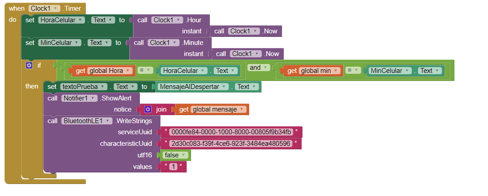Y esto es todo, nuestra aplicación ya está funcionando ¡¡FELICITACIONES!!
Mira el video de nuestra App funcionando.
Valor agregado:
Tambien podemos hacer que nuestro celular suene como cualquier otra de las alarmas de nuestro telefono. Para esto debes agregar esta librería. click aquí para ir a descargar.
Esta librería lo que hace es que nos permite conectarnos a la alarma de nuestro telefono y establecerle como si fuera una alarma normal la que nosotros le hemos agregado en nuestra aplicación. Como pudieron observar nuestra aplicación tiene un CheckList, con este pedimos al usuario si quiere que la alarma suene o no, y siesta respuesta es positiva comprovamos que las horas y minutos que el usuario ingrese sean en el rango que deberían ser : entre 0 y 24 horas y entre 0 y 60 minutos. Luego de esto utilizamos el set de nuestra librería para establecer la hora y mostramos la alerta de alarma configurada.
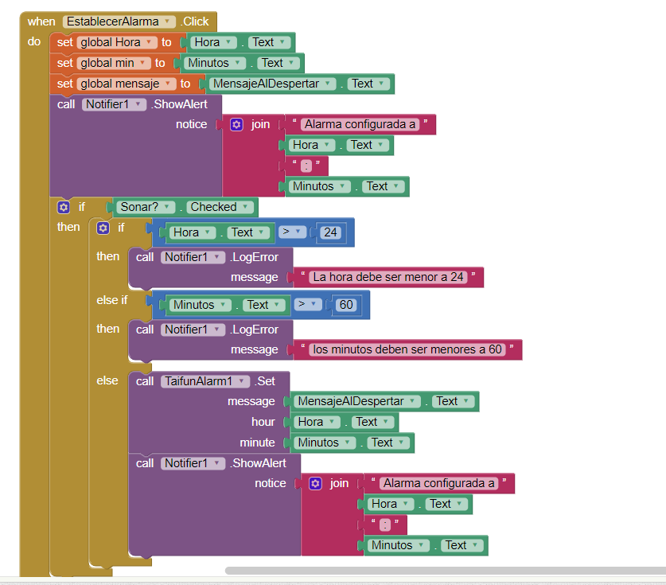ESTO ES TODO NUESTRO TUTRIAL. ¡¡GRACIAS POR HABER APRENDIDO CON NOSOTROS!!
{kind=link}